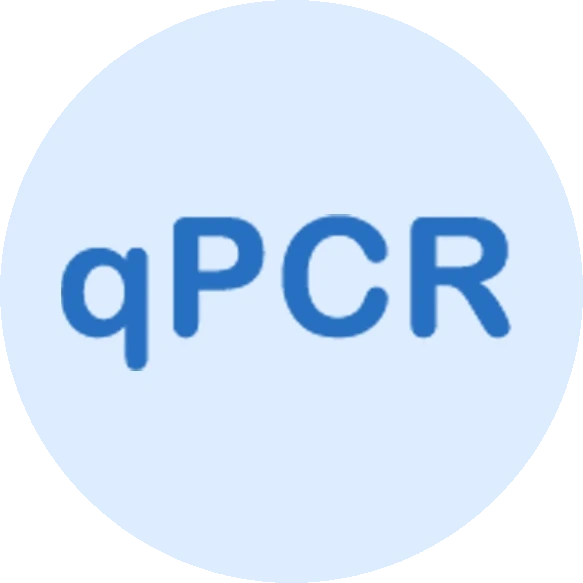
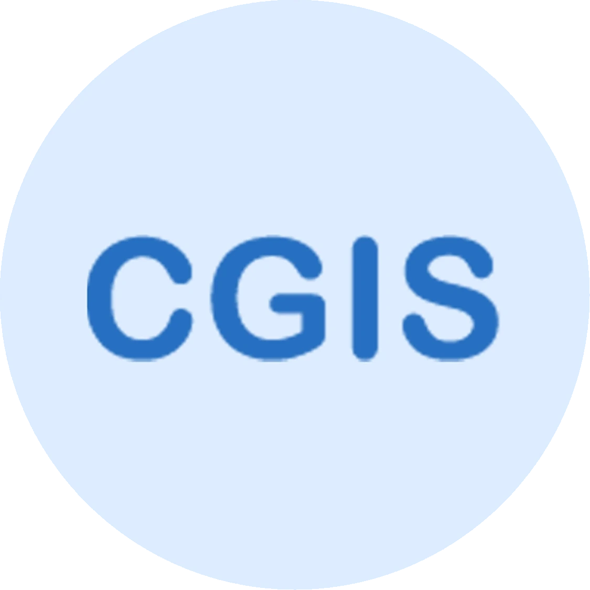
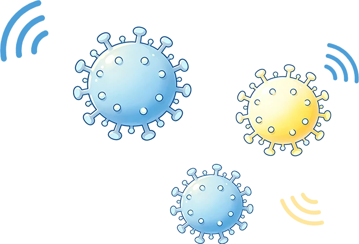

Loading…
ECHO Yeast — 工程化酿酒酵母 H1N1 流感病毒生物传感器


About 1 in 12 people worldwide is infected by influenza A every year
Influenza A · every year
1 in 12 people worldwide are infected by influenza A every year
Every year
660,000,000
people catch influenza A
≈ 21 every second
Approximately 21 people are infected with influenza A every second — about 660 million each year, based on WHO estimates.
Share of the world population
- 20238.19%
- 20248.11%
- 20258.03%
Estimate: WHO ~1 billion seasonal influenza cases each year × influenza A share of positives (66%, WHO South-East Asia Region, 2025) ÷ UN world population for that year; that is also ≈ 21 new infections every second. Sources: WHO Influenza (seasonal) fact sheet, 28 Feb 2025; WHO Seasonal influenza – Global situation, 10 Dec 2025; UN World Population Prospects via World Bank.
Virus detections by subtype reported to FluNet, 21 October 2022 to 21 August 2026
Virus detections by subtype reported to FluNet,
21 October 2022 to 21 August 2026

Week start date
Influenza subtypes
A(H1N1)pdm09
Influenza percent positive
Detection methods: qPCR / ELISA / CGIS
Contemporary popular methods for detecting H1N1 influenza





qPCR Nucleic acid test
＋ Highest sensitivity & accuracy, quantitative — the reference standard
－ Needs lab equipment & trained staff, ~1–2 h
ELISA Antigen / protein test
＋ High throughput & lower cost, good for batch screening
－ Less sensitive than qPCR, needs a reader & more time
CGIS Colloidal gold strip
＋ On-site result in 10–15 min, portable, no instruments
－ Limited sensitivity & result uncertainty, needs confirmatory testing
Influenza A Virus Biosensor Based on Engineered Yeast

Influenza A Virus
Biosensor Based on
Engineered Yeast
Can We Build a Living Sensor That Directly Responds to Viral Signals?
Can We Build a Living Sensor
That Directly Responds to Viral Signals?


WHY EHCO Yeast?
WHY EHCO Yeast?

Research content: Workflow and principle

Research content:
Workflow and principle


未来愿景：从 H1N1 到广谱平台
完成 H1N1 概念验证后，PAGER-Yeast 平台的核心价值在于其模块化与可替换性：膜表面的纳米抗体识别单元可针对不同抗原快速迭代，而下游的 GPCR 信号重布线与双模式报告系统保持通用。结合低成本便携式荧光读数设备，该体系有望从实验室原型走向基层可用的现场检测工具。
- 模块化识别单元：保留 α-factor 分泌锚定与 linker 框架，仅替换 VHH 序列即可覆盖 H5、H7 等流感亚型，乃至 SARS-CoV-2、RSV 等呼吸道病原体；
- 信号优化：通过 DCZ 浓度梯度与诱导时间优化，建立荧光强度与病毒载量的对应关系，实现半定量检测，匹配便携式荧光读数仪；
- 多场景应用：面向基层诊所初筛、校园晨检、出入境检疫口岸与家庭自测等需要快速、低成本结果的场景；
- 开源与标准化：以 iGEM Registry 兼容形式提交启动子、报告基因、信号模块等标准化生物元件，并整理可复现的实验方案与质粒地图。
[待补充：目标拓展亚型列表、硬件原型参数、产品化时间表与监管路径初步评估]